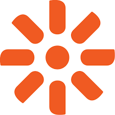
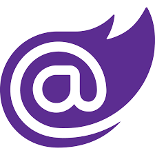
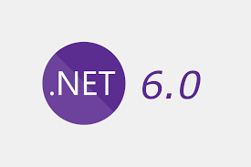
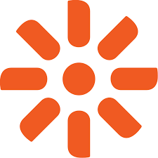
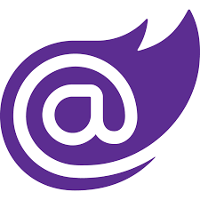
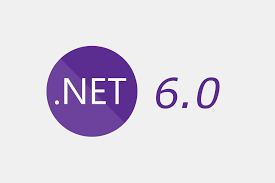

Технології які я використовую на роботі
Jenkins — відкритий інструмент для безперервної інтеграції, написаний на Java. Проект був відгалуженням проекту Hudson[en], після суперечки з Oracle, яка заявляла свої права на торгову марку Hudson і таки створила її в грудні 2010. Jenkins допомагає автоматизувати частину процесу розробки ПЗ, яка не потребує участі людини (в таких частинах, як неперервна інтеграція), та розширює технічні можливості команд розробників з неперервною доставкою продукту.
.Net — це платформа від Microsoft, яка дозволяє створювати програмні додатки. Перший випуск .NET Framework відбувся в 2002 році. Вважається, що .NET Framework було створено в якості альтернативи платформі Java від компанії Sun. Головна відмінність полягає в тому, що .NET Framework офіційно розрахована на роботу саме з операційними системами родини Microsoft Windows.
Blazor — це безкоштовний веб-фреймворк з відкритим вихідним кодом, який дозволяє розробникам створювати веб-програми за допомогою C# і HTML. Його розробляє Microsoft.